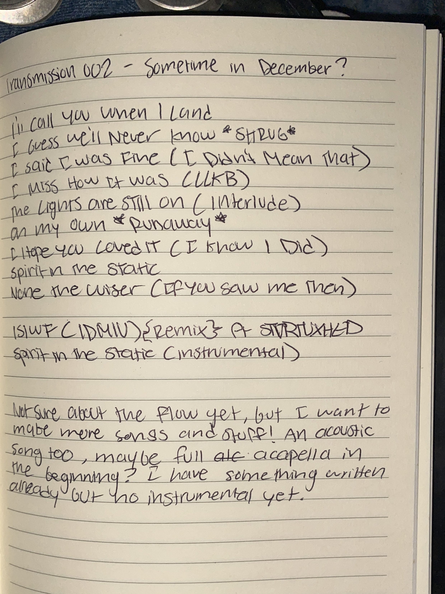

Signal
Detected.
you found the other side of the transmission. unfinished things, recovered files, and a few things that probably weren't going on the main timeline.

Transmission 002
11 tracks...old signals and new noise
if you've already presaved it, you're ahead of the signal.
Private Screening
TRANSMISSION 002 // VISUALIZER // STATUS: RECOVERED
a little something from the archive. don't lose the link.
Recovered Audio
I'll Call You When I Land
EARLY DEMO // BAREBONES VERSION
before it became what you know now.
From the Journal
original planning notes for Transmission 002. the plan changed. the evidence remains.

Original planning notes
this is where the album started taking shape. the plan changed along the way, but some of the original ideas stayed!
RECOVERED FROM: THE JOURNAL
FORMAT: PHOTOGRAPHIC RECORD
Archive Log
This log is manual. Change the entries whenever you add or update archive material.